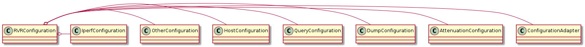

This is a class to hold the attributes for the running of the RVR test. Since there are so many the different sections will each be given a class and then aggregated into the RVRConfiguration class.
I started calling these enums a while back, but they’re really constant-holders. The main purpose is to use dot-notation instead of strings in the classes to try and reduce errors, as well as to put them all in the same place.
class AttenuationEnum(object):
"""
Constants for the [attenuation] section
"""
__slots__ = ()
section = 'attenuation'
# options
stop = 'stop'
name ='name'
control_ip = 'control_ip'
interface = 'interface'
start = 'start'
step_sizes = 'step_sizes'
step = 'step'
step_list = 'step_list'
reversal_limit = 'reversal_limit'
step_change_thresholds = 'step_change_thresholds'
stepchange = 'stepchange'
# defaults
default_attenuator = 'WeinschelP'
default_start = 0
default_reversal_limit = 0
default_stop = sys.maxint
default_step_sizes = [1]
# constants
delimiter = ' '
ATTENUATION_LOG_STRING = '[attenuation] {0} = {1}'
class DutEnum(object):
"""
Holder of constants for the DUT
"""
__slots__ = ()
section = 'dut'
class ServerEnum(object):
"""
Holder of constants for the server
"""
__slots__ = ()
section = 'server'
class OtherEnum(object):
"""
Holder of constants for the other section
"""
__slots__ = ()
section = 'other'
# options
result_location = 'result_location'
test_name = 'test_name'
ping ='ping'
repetitions = 'repetitions'
recovery_time = 'recovery_time'
#defaults
default_result_location = 'output_folder'
default_test_name = 'rate_vs_range'
default_repetitions = 1
default_recovery_time = 10
# end other Enum
class TrafficEnum(object):
"""
A holder of iperf traffic constants
"""
__slots__ = ()
section = 'iperf'
old_section = 'traffic'
# directions
upstream = IperfConstants.up
downstream = IperfConstants.down
both = 'both'
# options
direction = 'direction'
# defaults
default_direction = both
false = 'no false off'.split()
Since I’ve added so many defaults I’ve decided to create a decorator to deal with missing sections.
optionalsection(method, *args, **kwargs) |
function to use as a method decorator (expects self as one of the arguments) |
RVRConfiguration(configuration) |
A holder of the RVR Configuration |
RVRConfiguration.attenuation |
An Attenuation Section Configuration |
RVRConfiguration.query |
A Query configuration |
RVRConfiguration.dut |
The client’s configuration |
RVRConfiguration.server |
The server’s configuration |
RVRConfiguration.other |
Gets the Other Configuration |
RVRConfiguration.traffic |
The Traffic Configuration |
RVRConfiguration.reset() |
Resets the attributes to None |

For each of the required sub-configurations the RVRConfiguration has a property that builds it. For required sub-configurations the procedure is:
- Create sub-configuration, passing in self.configuration to the constructor
- Set property to sub-configuration
- Cast the sub-configuration to a string and log it at the debug level
- Call the sub-configuration’s
check_repmethod
If any check_rep fails it will raise a ConfigurationError.
For the optional sub-configurations (like the Query), the procedure above is preceded by a check to see if the configuration has the section-header it needs, if not it quits.
| Option | Default | Notes |
|---|---|---|
| maximum | sys.maxint | Maximum to attenuate |
| name | Name of the attenuator (used by the AttenuatorFactory) | |
| control_ip | Was called ‘interface’ but is actually the IP address | |
| start | 0 | Starting attenuation |
| step_sizes | [1] | Old ‘step’ option – Amounts to increase the attenuation |
| step_change_thresholds | None | old stepchange option –iterator of thresholds or None |
Note
These changes need to be emphasized to users. There will be a configuration incompatibility otherwise.
AttenuationConfiguration(*args, **kwargs) |
Configuration for the Attenuation settings |
AttenuationConfiguration.stop |
Gets the maximum attenuation from the config-file |
AttenuationConfiguration.name |
Gets the name of the Attenuator for the AttenuatorFactory |
AttenuationConfiguration.start |
The starting attenuation value |
AttenuationConfiguration.control_ip |
The old option was interface so it will try that if control_ip is missing. |
AttenuationConfiguration.step_sizes |
The amounts to increase the attenuation with each pass. |
AttenuationConfiguration.step_change_thresholds |
The thresholds which if exceeded triggers a change in step-size |
AttenuationConfiguration.step_list |
Gets a list of steps to take |
AttenuationConfiguration.reversal_limit |
number of times to change attenuation direction |
This uses the stop option in the attenuation section of the config-file.
This is used when the ping isn’t used or the user wants to short-circuit the test at some level. Since the AutomatedRVR.Test is using asking the attenuator for the maximum it will allow (and uses that as the sentinal to quit the RunTest while loop), this will return the largest integer that the system will allow if the user doesn’t set it, that way in the code you can set the atten_max variable using something like:
atten_max = min(rvr_configuration.attenuation.stop,
attenuator.getAttenMax())
| Option | Value | Return |
|---|---|---|
| stop | <some integer> | <some integer> |
| None | None | sys.maxint |
Note
Henry suggested calling this ‘maximum’, which it was for a while but since there was an existing start attribute I changed it to stop so there would be a more obvious pairing of the terms.
The name attribute is the name of the Attenuator as recognized by the AttenuatorFactory located elsewhere in this package. It is optional with the name held in the AttenuationEnum.default_attenuator.
The control_ip attribute is the IP address (or hostname) used to reach the Attenuator. The old configuration was expecting interface as the name so it accepts that as well, but I’ve changed it to control_ip since interface suggests the name of a network interface and the client and server configurations are using control_ip.
The start attribute holds the starting attenutation value. It is optional with a default of 0.
The step_sizes attribute holds the list of step-sizes to use. This is the same as the old step attribute, but since it’s a list and not a single value I renamed it to step_sizes. The default is a list with the value of 1.
The step_change_thresholds attribute is a list of threshold values to trigger a change in step size. If, for instance, the step_sizes has two values (1, 2) and the step_change_thresholds has 1 value (400) then the attenuation will increase by 1 on each iteration and then when the attenuation exceeds 400, the attenutation will increase by 2 on each iteration. It has a default of None, which will tell the StepIterator that the step-size doesn’t change.
The only method the AttenuationConfiguration has is reset which will set the attributes back to None. This was implemented to make testing easier, but would also allow the object to be re-used if the configuration was changed.
This is a place for leftover things.
OtherConfiguration(*args, **kwargs) |
A holder of leftover parts |
OtherConfiguration.result_location |
The name of the output folder (default = ‘output_files’) |
OtherConfiguration.test_name |
The name to use for the test. |
OtherConfiguration.ping |
|
OtherConfiguration.repetitions |
Gets number of times to repeat the same test |